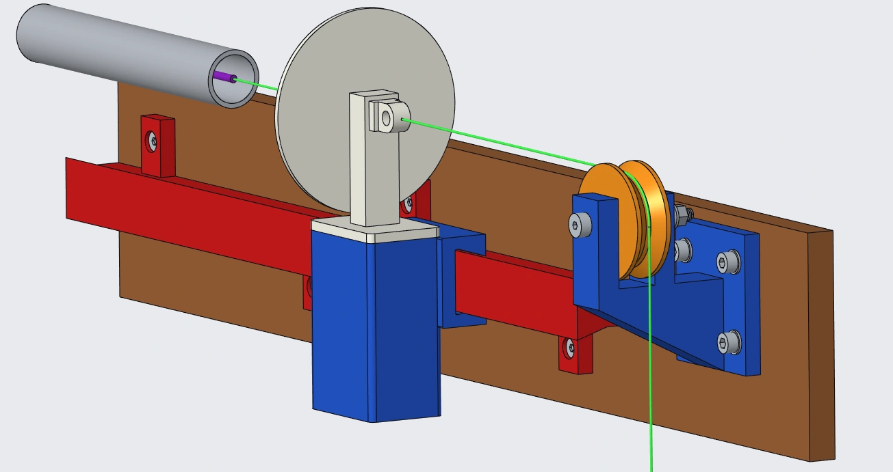

Undergraduate research · Fall 2026 – Present
Modular TCP fabrication & characterization guide
While fabricating twisted and coiled polymer (TCP) muscles from silver-coated nylon for the HBS Lab's active cooling research, I encountered premature breaking and inconsistent coiling. During my literature review, I came across a study from the University of Calabria that used a guide to restrict unwanted movement of the hanging weight. This gave me a reason to explore a custom guide for the lab's existing fabrication setup. I was also tasked with making the rail reusable for future horizontal displacement characterization.
I compared sliding guides, rollers and a combined roller-and-track system. Since the deadweight was adjustable and the parts had to be 3D printed, I chose a simpler sliding carriage that could be removed without dismantling the setup. My main concerns were maintaining tension and preventing rotation and snagging.


Vertical fabrication: Rotation and friction
I referenced DC gearmotor specifications and the PLA material data sheet to establish a basis for sizing the guide. I used force and moment balances to estimate friction and bending from resisting rotation, with assumed transmitted torque, friction and effective printed stiffness for the preliminary calculations.
MTCP: transmitted torque; d: contact spacing; μ: friction coefficient; mg: moving guide mass; E: modulus; I: section inertia.
One preliminary load case predicted an added drag of 0.10 N (equivalent to 10.2 g of deadweight), excluding the moving guide's own mass. This helped me determine how much weight would need to be removed to maintain fabrication tension. The bending calculations guided my choice of rail geometry and clearance to reduce the risk of snagging.
The initial printed guide slid smoothly in fit testing. I retained the sliding surfaces and reduced the outer faces to clear the rail fasteners under side loading. The low predicted rail deflection supported 15% infill to reduce material and printing costs.
Adapting the rail for horizontal characterization
Building on my mentor’s previous work on active cooling of TCP actuators, I designed a second carriage that runs on the same rail. A pulley and adjustable deadweight maintain tension on the muscle inside the cooling tube. A laser sensor at a fixed reference near the tube tracks the circular target as the TCP expands under applied voltage and contracts during cooling for the intended test configuration.
I used a rectangular post with a longer engagement length to resist twisting and reduce contact reactions. I aligned both cords at the same height so their moments cancel when tension is balanced. Unequal tension, carriage weight and misalignment can still cause rotation and binding.
To size the pulley hardware, I referenced the lab’s published 300, 600 and 900 g loads for 2-, 4- and 6-ply TCPs. Scaling this pattern to 18 plies gives 2.7 kg; I rounded up to a 30 N preliminary hardware design load, not a verified 18-ply operating limit.
T: cord tension; h: height above rail; d: contact spacing; F and L: retaining-face load and effective span. Pulley equation assumes equal tension in both legs.
At 30 N per cord leg, the pulley carries a resultant of 42.4 N. I used a steel shoulder screw so the roller turns on a smooth surface, and a diagonal gusset to support the outer end of the bracket. Recessed rail fasteners keep the mounting hardware out of the carriage’s sliding path.
For a severe one-sided, restrained load case, the estimated moment-induced contact reaction is 46.4 N. I checked the rail and retaining faces to see whether deformation could reduce clearance and cause snagging, rather than relying on the post bending calculation alone.



Structural verification
I 3D printed and tested the initial guide for sliding fit. The structural checks below focus on alignment, clearance under load and component strength.
Vertical fabrication: Rail displacement
| Load case | Hand calc. | FEA | Difference |
|---|---|---|---|
| Rail lateral bending | 0.00188 mm | ___ mm | ___% |
0.167 N center load on a simply supported 200 mm span; assumed equivalent modulus of 1 GPa.
Vertical fabrication: Motor mount alignment and strength
I checked the mount's angular deflection to keep the TCP aligned with the vertical rail. The low predicted tilt motivated a lighter print, with 40% infill and six wall loops for reinforcement. I set a minimum factor of safety of 3 for the mount.
P: motor weight and TCP tension; e: effective cantilever length; θ: mount rotation (radians).
| Structural check | Hand calc. | FEA | Difference / target |
|---|---|---|---|
| Motor-axis tilt | 0.00274° | ___° | ___% |
| Motor mount FOS | Not calculated | ___ | ≥ 3 |
Horizontal characterization: Carriage and pulley
I screened a 30 N one-sided tension imbalance to estimate deformation if the carriage becomes restrained. The retaining faces are the main concern because local bending and contact friction can reduce sliding clearance. The pulley and attachment eyes are checked separately for strength under axial tension.
| Structural check | Hand calc. | FEA |
|---|---|---|
| Rail bending | 0.058 mm | ___ mm |
| Retaining-face bending | 0.22–0.44 mm | ___ mm |
| Retaining-face stress | 7.9–15.9 MPa | ___ MPa |
| Carriage FOS | — | ___ |
| Pulley mount FOS | — | ___ |
| Roller / axle FOS | — | ___ / ___ |
| Attachment eye FOS | — | ___ |
| Laser target displacement error | — | ___ mm |
Hand estimates use an equivalent modulus of 1 GPa. The retaining-face range represents assumed contact widths of 10–20 mm. Normal operation has opposing tensions; the one-sided case is a conservative screening case, not a measured load.
Hand calculations and FEA are simplified models of the printed parts. Matching loads, supports and material properties are required for direct comparisons. Loaded sliding clearance, printed material strength and the actual characterization preload determine whether the design is suitable for use.